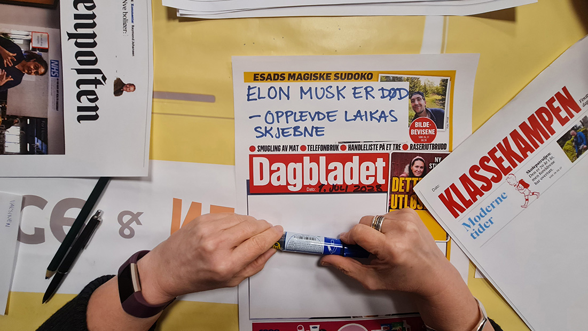
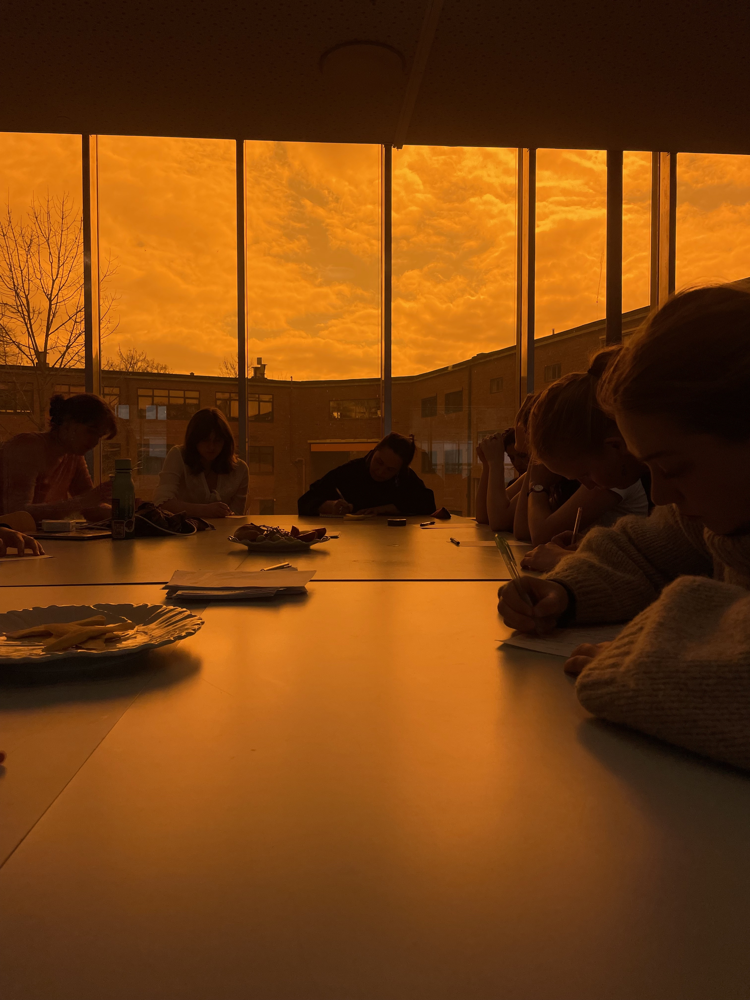

Prosjekter
Her er noen av prosjektene vi har gjort sammen med flere dyktige samarbeidspartnere. Blant annet holder vi kurs, foredrag og deltagende verksteder. Vi er også åpne for å samarbeide om helt nye prosjekter, så ikke nøl med å ta kontakt hvis du har en idé du vil dele med oss.

NØKO — En ny økonomi som setter mennesket og natur i sentrum
Et årlig arrangement som setter fokus på en ny økonomi ved å stille spørsmålet Hva om vi organiserer samfunnet rundt det som virkelig betyr noe? I 2025 ble NØKO holdt på Blindern med kjente talere som Kate Raworth, Emma Holten, Tone Smith og Nikolai Winge. I år arrangeres det på Sentralen i Oslo, den 27. oktober. Les mer og meld deg på her.

Sagene Bærekraftsverksted
Verkstedet er et grasrotinitiativ for læring, idéutvikling og endringstiltak som på ulike måter utforsker sosial, økonomisk og økologisk bærekraft. Vi samarbeidet med Torggata Blad og fikk støtte fra Sagene Bydel. Prosjektets kjerne er en oppfordring til selvorganisering, og verkstedet kan anses som en inkubator for lokale tiltak som deltakerne selv har engasjement for. Ta kontakt hvis du vil melde deg på, eller les mer her.

Politisk økologi og nedvekst — omstilling til et bærekraftig samfunn
Våren 2026 holdt vi en tredelt kursserie om nedvekst og politisk økologi. Det var et skandinavisk samarbeid med Cirka CPH og Universitetet i Lund. Basert på et teoretisk grunnlag, emosjonell forankring og øvelser i forestillingsaktivisme jobbet deltagerne med sammenhengen mellom klima, rettferdighet og hva som er alternativene for en bærekraftig fremtid.